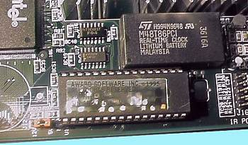

|
|
|
Базовая система ввода-вывода (BIOS — Basic Input Output System) включает в себя набор программ ввода-вывода, организующих взаимодействие между устройствами компьютера. BIOS рассматривается как аппаратное средство, так и как программный модуль операционной системы.
Система
BIOS в компьютере реализована в виде микросхемы, установленной на системной
плате.
В старых
системах устанавливали микросхемы ROM BIOS. В современных компьютерах для
хранения BIOS используются микросхемы флэш-памяти (flash memory). Они допускают
перезапись информации для одного компонента до десятков тысяч раз. Это
позволяет легко модифицировать старые или добавлять новые функции для поддержки
подключаемых устройств. Для модификации BIOS используется специальная утилита
(программа), поставляемая в комплекте с системной платой.
Независимые (от IBM) производители выпускают микросхемы, полностью совместимые с микросхемами IBM.
Система BIOS включает CMOS RAM — память, хранящую информацию о системном времени и конфигурации компьютера. CMOS-память отличается малым энергопотреблением, энергонезависима, подпитывается от встроенного аккумулятора. Содержание CMOS RAM изменяется с помощью программы Setup, входящей в систему BIOS.
